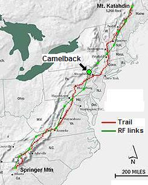

2014 SUCCESS! KB3EJM, Kevin, again operated Camelback this year. He installed a permanent digi with the callsign of CAMLBK and also operated at Mobile PAMTN-9 from the parking lot. Apparently the mobile PAMTN-9 did all the digipeating with zero seen from CAMLBK except for its own 10 minute beacons. More to come when Kevin makes his report.
2013 Planning: Kevin McCauley, KB3EJM is leading the effort this year. See the summary spread sheet.
2012 PLANNING: Kevin reported he could not get the key to the existing digipeater to change its FREQUENCY for the day (He has remote sysop access). So I'll have to go check and see how he worked around that issue. junk.
2011 Success: Kevin KB3EJM spent the prior week re-configuring the permanent 144.39 digi up on Camelback with the special settings for the event. It was confusing at first, since the existing Camelback APRS digipeater did not even show up on the 144.39 network. Eventually we found the problem settings and Kevin got it up for the event by Friday. SInce he was not going to be there that day, it was a white knuckle experience... But it worked Perfectly! The only minfor issue was the long 500ms TXD delay.
2010 not heard: Team was headed by KB3EJM, Kevin. Kevin reports the station was set up (while he was at work) however a strong storm came through and blew off the antennas. The wind actually broke the masts off the trailer they had set up. Mike KB2ITR had made one contact with a station before they went dead. Kevin plans to be up there again this year to try again. They have set up a permanent APRS repeater on Camelback on 144.390. We can use that for testing in 2011. If it works, Kevin can just change the frequency for the event.
2009 Success! Previously in 2009 Camelback was a success. See the 2009 report and photos
See the Golden Packet plan. . This is one of the 15 hill-top sites from Georgia to Maine we hope to visit this summer on 26 July for 6 hours to attempt to relay a text message using hand-held radios the 2000 mile length of the Appalachain trail. This is to be a no impact Leave-No-Trace type of event of a few individuals at each site. . Other hikers equipped with APRS ham radios are welcome to participate with advance notice.
Camelback Mountain is a very public access point in Big Pocono State Park and at the top of an adjacent winter ski area. It has drive-up access and a parking lot that appears to be centered on the peak giving good mobile views to the desired southwest and northeast. A mobile with a short mast should work well. But the path from the SW over the many ridges of the PA mountains may need a beam. In fact, dual beams pointing opposite directions may be required.
Tannersville and I-80 pass just to the east of the mountain for quick easy access.

ALTITUDE: . . . . . . . . . . . . 2100 feet
POSITION:. . . . . . . . . . . . . 4102.55N / 7520.98W
LINK NORTHEAST:. . . . Sam's Point, NY
Test with 442.050 - PL 114.8.
RF details
by John, KX4O
LINK SOUTHWEST:. . . . Governor Dick Hill, PA
A climb-up site.
RF details
by John, KX4O
LINK NEARBY:. . . . . . . . Highpoint, NJ, *did not work* as a possible bypass
VOICE REPEATER:. . . . .146.865 T100? at the site. (Next year we want to only use UHF coordination freqs)
. . . . . . . . . . . . . . . . . . . . . . Note, there is also a 146.865 T131 in Cameden County NJ
ECHOLINK NODE: . . . . TBD
INTERFERRENCE: . . . . 146.865 T100?, 444.45 T131, (145.23 T077 a mile further)TBD
. . . . . . . . . . . . . . . . . . . . . . When testing, ignore the 146.865 T131 in Cameden County NJ
TEAM LEADER:. . . . . . . Kevin Mcauley KB3EJM * yahoo dot com - EPARA (2010 team leader)
. . . . . . . . . . . . . . . . . . . . . . Rick Mazzeo N3XKU richxku * gmail.com
. . . . . . . . . . . . . . . . . . . . . . Roger Shultz [nj2r*verizon.net] can't hike... (2009 leader, 2011 volunteer)
. . . . . . . . . . . . . . . . . . . . . . Jeff Kashinsky, W2UA (2009) not interested 2010
EQUIPMENT: . . . . . . . . . D700, 9 el beam, 3 el beam available
COMMENTS: .
John Huggins, KX4O's link analysis shows that Camelback will need a good station for both of its links. 10 Watts into a groundplane will not do it. The mobile must operate at 50 watts, have a 12' or higher mast, and have a GAIN vertical antenna with probably 5 dBi gain or so or dual beams.
Path angles from the mountain are nearly 180 degrees apart from the SW to the NE and show how ideally located this site is between adjacent nodes. As seen in the above view, vehicle access should be easy. The path to the SW from GD Hill should be the more difficult path as it has many grazing peaks to cross. But we are awaiting a site visit report from the Camelback team (TBD).
This view above is a winter view. W3BXW reports that a 20' mast in the parking lot should get over any trees in both directions. The two views that follow cover the RF paths from the southwest and to the northeast.
EPARA GROUP in 2010: During a site test on 20 June 2010, Kevin, KB3EJM heard us on the air and volunteered his club to set up the digipeter for the event. His club was already going to be on Camelback that weekend in 2010 doing other activities. They even volunteered to put up a permanent digi. Apparently they were not successful in 2010...
Initially, several higher mountains in NY state were analyzed before we found the much more accessible Sam's point, and some of these sites still show on the image above. Sam's point is lower, but is still a good link.

DETAIL LINK ANALYSIS BY KX4O: Be sure to follow the two RF links at the
top of this page to see the excellent and very detailed RF link analysis
performed for every link in this project by KX4O John Huggins.
Each RF link shows the terrain map
elevations, the AT trail in yellow, the RF path loss itself
including fresnel zones and finally a
statistical plot of the probabilities of link availability. We will very
much be looking at the results of this project compared to the pre-event
analysis and predictions. All of KX4O's links are shown on his
AT Links Page.
The RF analysis provided by KX4O above shows this to be a solid link. In fact, there is the possibility next year that we can make the link from Camelback to Mt Greylock in one hop with some antennas.
This image above shows the path from the Maryland Mountains to Camelback via the observation tower at GD Hill. It also has a good RF path as shown below:
.
SITE REPORT by Roger Schults, N2JR:
On 26 Apr I ran a test with my son Paul, K2PCS from Mt. Gretna at Governor Dick Hill Tower to me at Camelback Mountain. Paul had my Yaesu VX-7r running 5 watts into an aftermarket higher gain (?) antenna. I'm not sure of the exact model since the marking was worn off but I think it is a Diamond brand about a 1/4 wave long for 2 meters. I used my ICOM 7000 running 50 watts to a F9FT 9 element yagi at about 9 feet off the ground.
. 
I was able to break the squelch on the HT when Paul was at the base of the
Governor Dick Hill tower. When he climbed the ladder to the top of the tower
we were able to have a two way QSO though he was pretty much just above
noise level. He was hearing my well all the time. I was having trouble
keeping the antenna peaked due to high winds on top of the mountain.
Access to Governor Dick Hill is via a trail that is about a mile long. Camelback was via road access with plenty of places to park and setup.
After the QSO with Paul, I tried to bring up Harrisburg repeaters as well as Lancaster Repeaters none of which I could access. I then turned the antenna to the northeast and was easily able to bring up Liberty, Cragsmoor, and Mt. Beacon repeaters. I then wondered if I could access Mt Greylock and I was pleased that I could. I was able to peak the repeater and had a good QSO with another OM. It would appear that a well equipped station on Greylock and a high gain antenna at Camelback might offer bypass of Sams Point.
I am less confident about the reliability of the path to Governor Dick Hill Park. A station with more than 5 watts and a 1/4 wave will be required.
I've attached pictures of my setup and some horizon views. It was very hazy and a forest fire may be visible to the north as well as Fox Gap and the Delaware Water Gap to the Southeast on the AT.
73, Roger, NJ2R
Bob, WB4APR
See my other GENERAL page on APRS applications and Ideas on the AT
Return to the APRS HOMEPAGE or SiteMap.